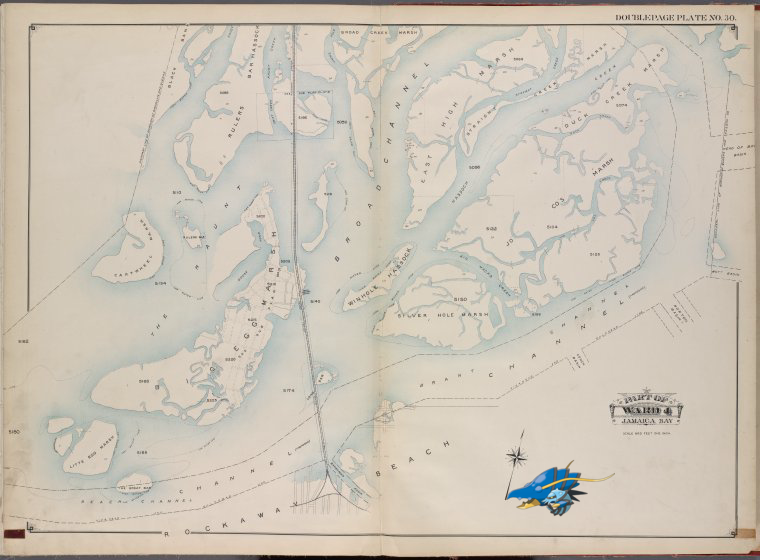

Pokémon in the NYPL archives
2018-2-12 18:10:04

Clawitzer on
Queens, V. 1, Double Page Plate No. 30; Part of Jamaica, Ward 4; [Map bounded by boundary line between Brooklyn and Queens, Broad Creek Marsh, boundary line of Borough of Queens and Nassau Co., Rockaway Beach]
.